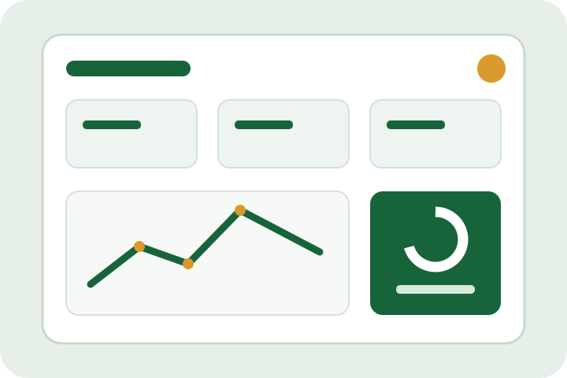
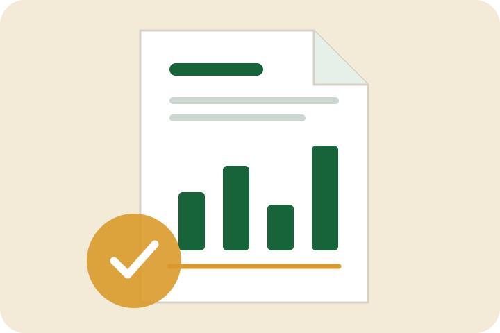
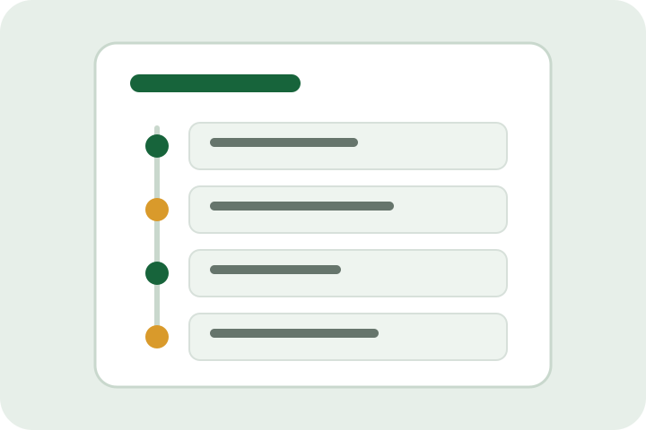

Dashboard
Uma visão resumida das principais informações do negócio.
Gestão para pequenos negócios em Angola
O MyPME ajuda micro e pequenas empresas a controlar vendas, despesas, dívidas, produtos e relatórios, mesmo quando não há internet.
Em preparação para testes e lançamento.

O essencial num só lugar
Uma experiência direta, concebida para organizar operações sem complicar o trabalho.
Funcionalidades
Do registo diário à consulta de resultados, o MyPME reúne ferramentas práticas para acompanhar o negócio.
Uma visão resumida das principais informações do negócio.
Registe vendas e mantenha um histórico organizado das operações.
Acompanhe saídas e consulte os gastos registados.
Organize valores em dívida e acompanhe a sua evolução.
Mantenha produtos, catálogo e stock reunidos num só espaço.
Consulte um histórico claro das ações importantes.
Gere documentos para consultar, guardar ou partilhar quando necessário.
Sincronize os dados da sua conta com Firebase quando houver internet.
Como funciona
Use e-mail e palavra-passe ou autenticação Google.
Adicione vendas, despesas, dívidas e produtos.
Acompanhe resumos, histórico e inventário.
Quando houver internet, mantenha os dados associados à sua conta.
Crie relatórios PDF a partir dos registos da aplicação.


Para quem trabalha por conta própria
O MyPME destina-se à gestão empresarial e pode apoiar diferentes tipos de micro e pequenas atividades.
Privacidade e controlo
O MyPME guarda dados localmente para funcionar offline e pode sincronizá-los com Firebase quando existe ligação. A conta e os dados MyPME podem ser eliminados dentro da aplicação através do fluxo protegido por reautenticação.
A aplicação prepara publicidade com Google AdMob. O candidato atual usa anúncios de teste; quando aplicável, as opções de privacidade são geridas através do fluxo de consentimento Google UMP. Os registos empresariais não devem ser enviados deliberadamente ao AdMob para segmentação.
Estado do produto
Este é um website informativo. O MyPME ainda não é apresentado aqui como disponível publicamente no Google Play.
Para dúvidas sobre a aplicação, conta, privacidade ou eliminação de dados:
Antonio Augusto
Programador independente do MyPME
Angola